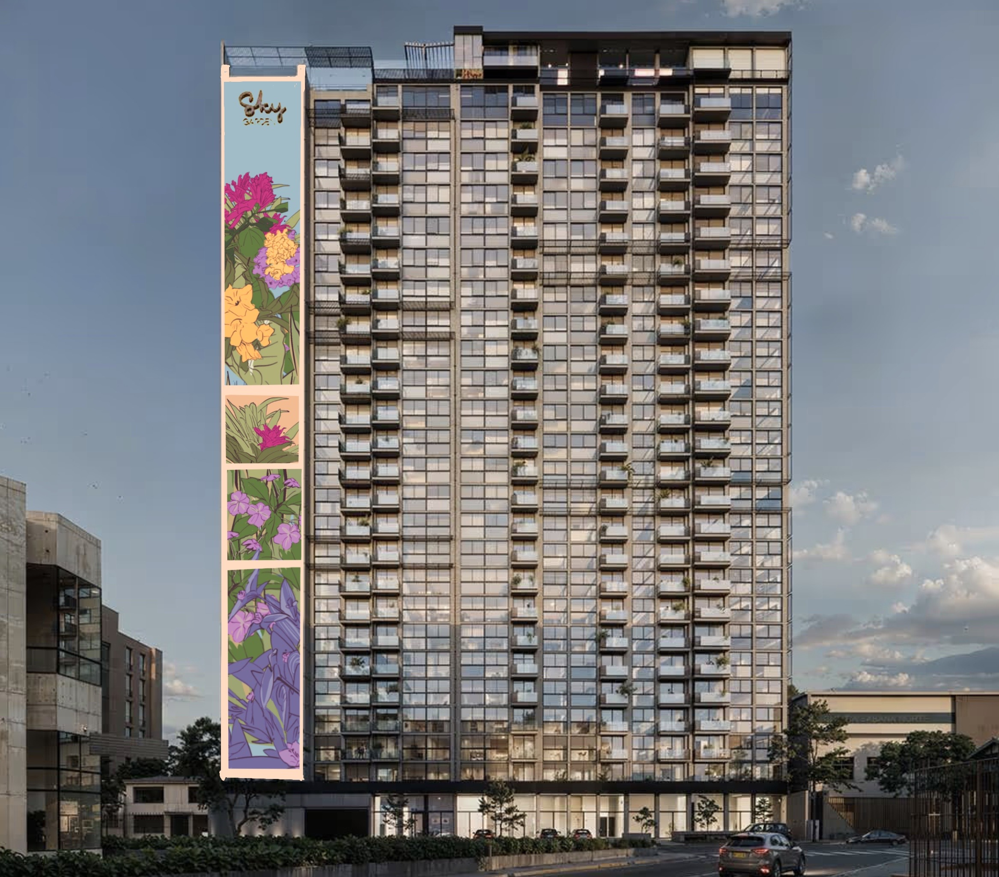
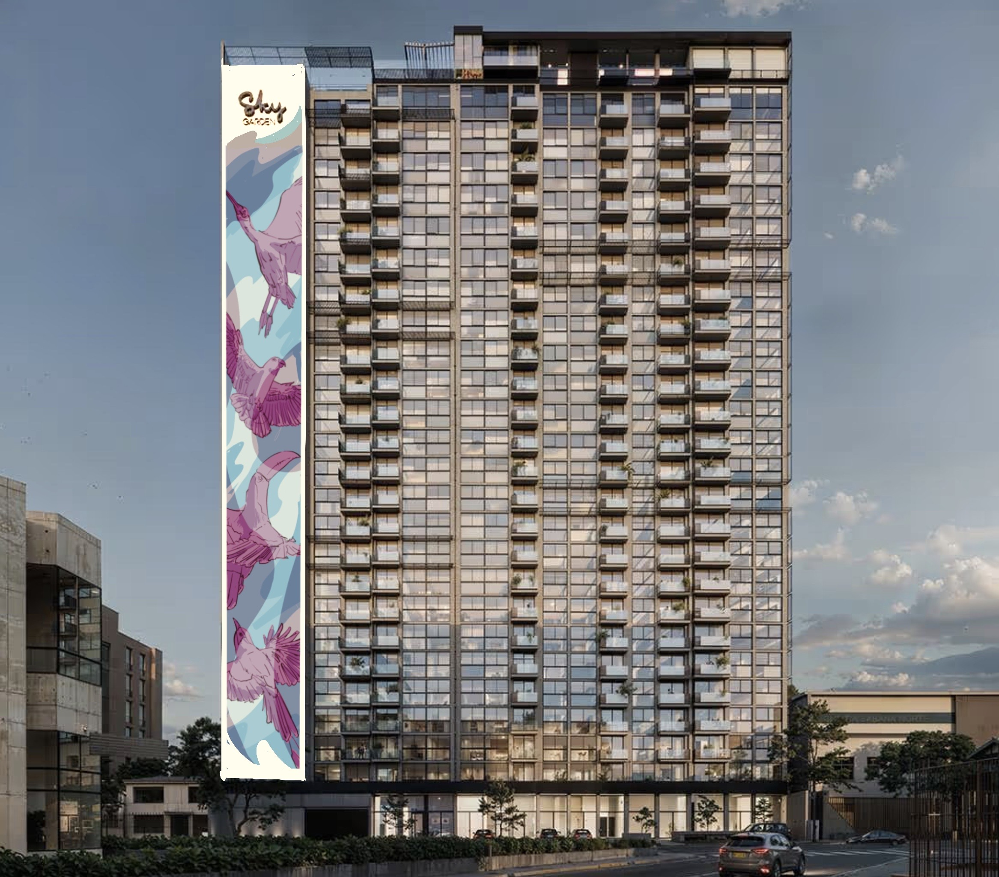
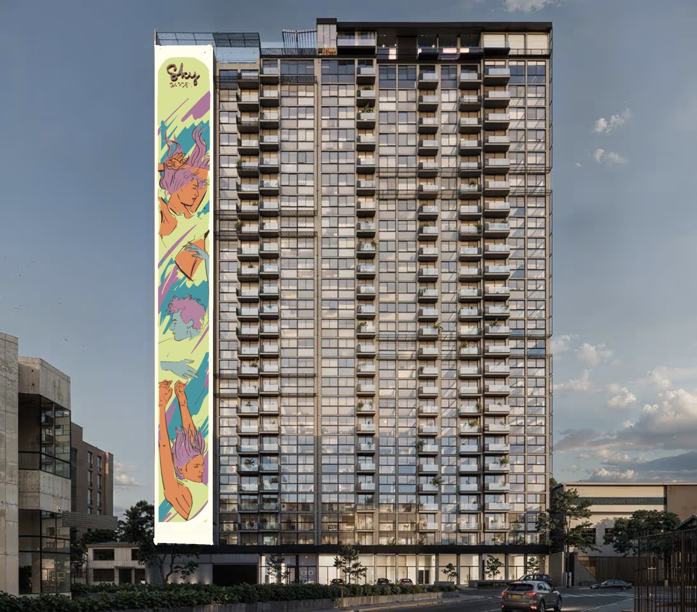

Tres visiones artísticas para transformar la fachada principal del edificio.
La ciudad es tu lienzo. Tu voto decide la obra final.

Diseño inspirado en la biodiversidad botánica de Costa Rica, integrando colores cálidos y naturaleza viva en la fachada vertical.

Composición en tonos pastel que rinde homenaje a las aves locales, creando una sensación de movimiento y libertad hacia el cielo.

Una representación vibrante de la diversidad humana, conectando a los ciudadanos con el espacio vertical mediante arte figurativo.